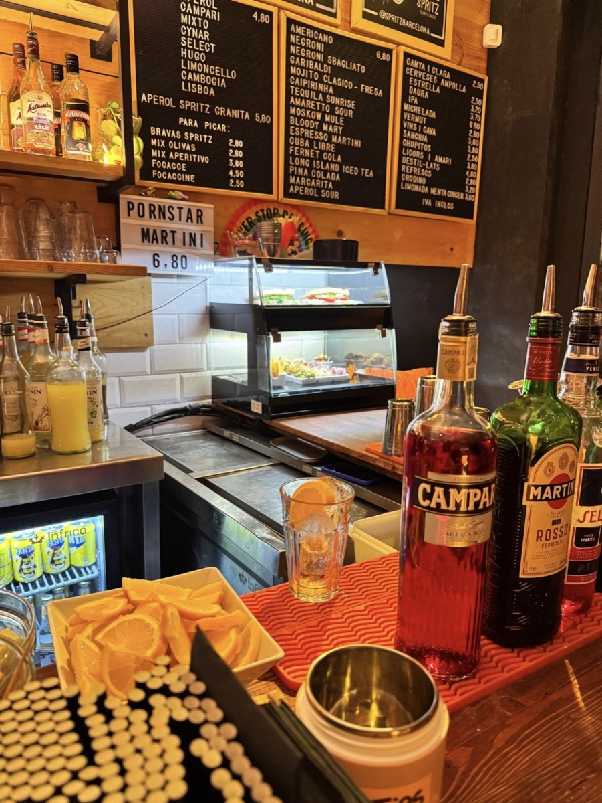
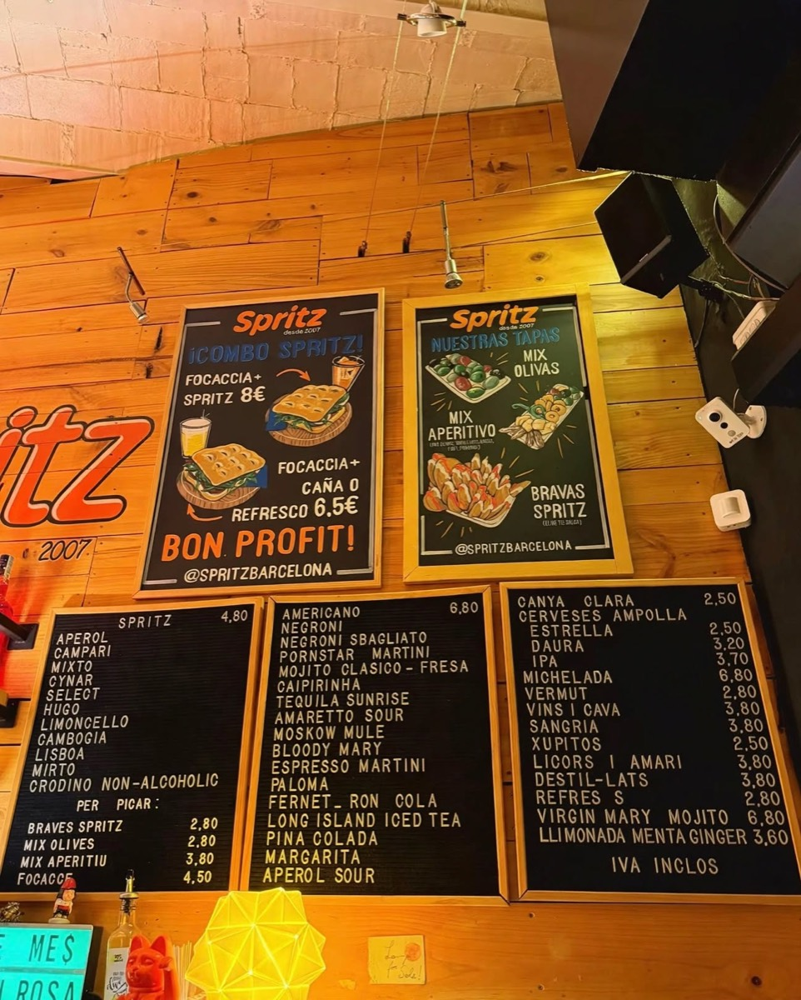
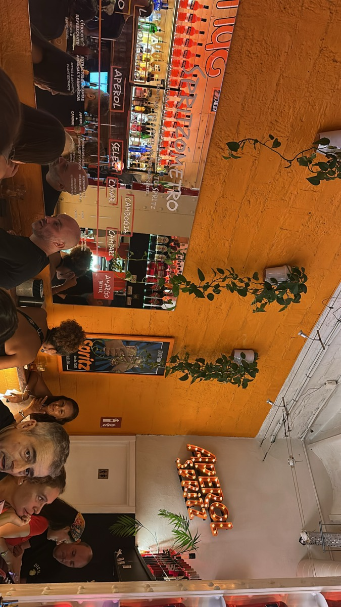
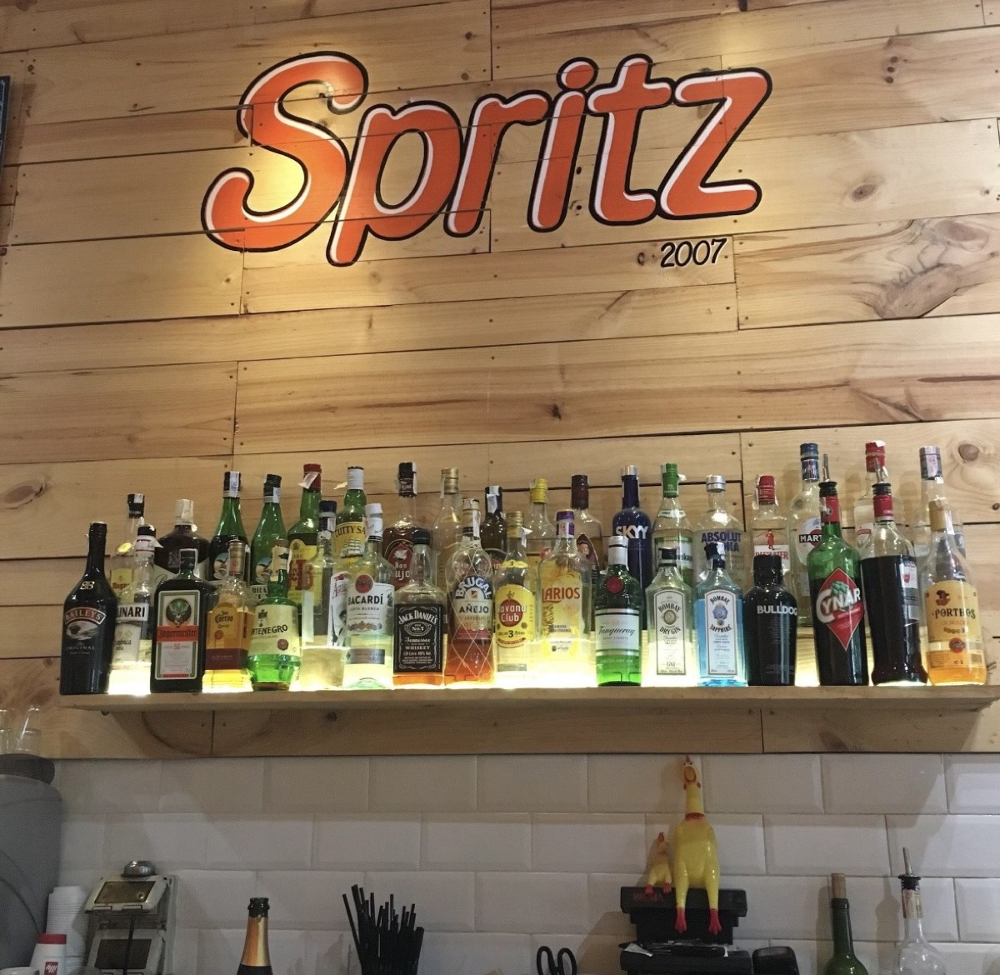
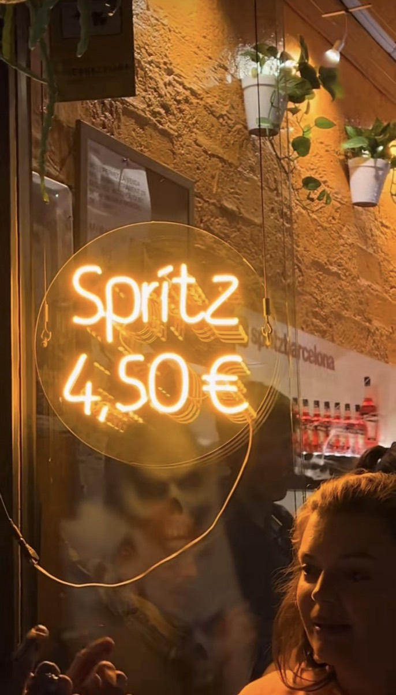
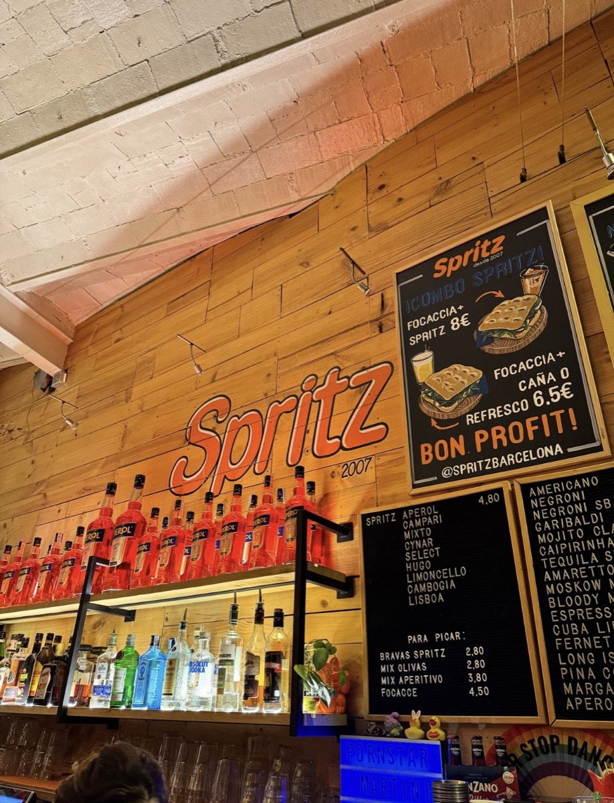
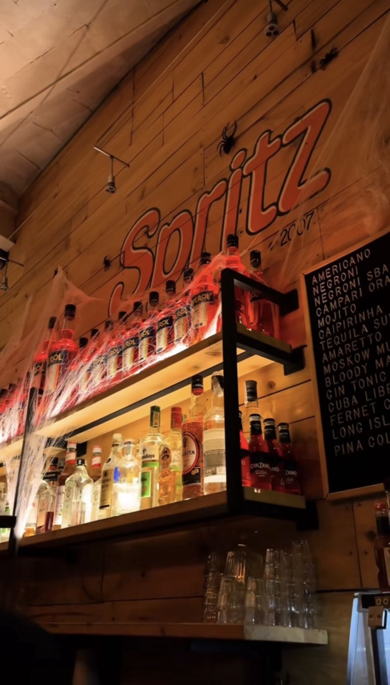

Detrás de la Catedral · desde 2007
Spritzes a 4,80€ y cero postureo.
Un bar pequeño y acogedor donde el vermut se toma despacio y la pared naranja ya es un clásico del barrio. Buenas copas, tapas simples, precios de barrio.
Sin reservas. Solo ven — te buscamos sitio.

La carta
Diez spritzes de amargo a dulce — como en el Spritzómetro del bar. Cócteles clásicos sin adornos y tapas para picar. Spritz + focaccia: 8€ — el combo que lo explica todo.


Un bar de barrio, en toda regla
Abrimos en 2007 en un callejón detrás de la Catedral y desde entonces no hemos cambiado la fórmula: buena bebida, tapas sencillas, música y conversación hasta que el cuerpo pida cama.
Detrás de la barra conocemos a la gente por su nombre (y por su spritz favorito). Ven solo, ven con tres, ven con doce — siempre hay sitio para uno más.
— el equipo de Spritz




Ven a vernos
Estamos a dos calles de la Catedral, en el casco antiguo. Si llegas al antiguo mercat del Born, ya casi estás.
08002 Barcelona (Ciutat Vella)
@spritzbarcelona en Instagram